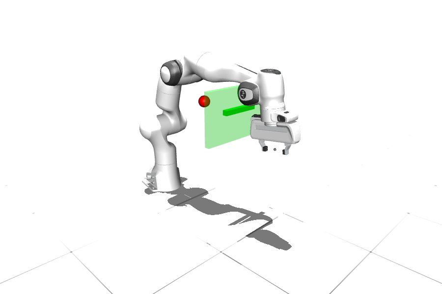

PandaOpenCabinet (RSS2025)

简化把手与滑轨场景源码版本：56420458c8d81acd6942779d9dab327382117175。结论为静态源码核验，未运行上游训练。
任务接口与验收
{
"control_dt_s": 0.02,
"sim_dt_s": 0.005,
"action": "incremental joint actuator targets, scale .04",
"success_definition": null
}
br_playground_cabinet_reward；br_playground_cabinet_task；br_playground_wrapper
实际奖励
clip(4(1-tanh(5d_handle))+8 I_reached(1-tanh(5d_target))+.25 I_no_barrier+.3(1-tanh(||q-q_init||)),-1e4,1e4)
br_playground_cabinet_reward；br_playground_cabinet_task
训练配置
入口（未执行）：cd rss2025 && python learning/train_jax_ppo.py --env_name=PandaOpenCabinet
{
"normalize_observations": true,
"action_repeat": 1,
"discounting": 0.97,
"unroll_length": 10,
"num_updates_per_batch": 8,
"seed": 1,
"gae_lambda": null,
"clipping_epsilon": null,
"value_hidden_layer_sizes": [
256,
256,
256,
256,
256
],
"value_obs_key": "state",
"policy_obs_key": "state",
"num_envs": 2048,
"num_minibatches": 32,
"batch_size": 512,
"learning_rate": 0.001,
"entropy_cost": 0.02,
"reward_scaling": 1.0,
"policy_hidden_layer_sizes": [
32,
32,
32,
32
],
"num_timesteps": 40000000
}
br_playground_configs；br_playground_entry
证据缺口
- No explicit success predicate found in task; do not equate shaped return with opening success